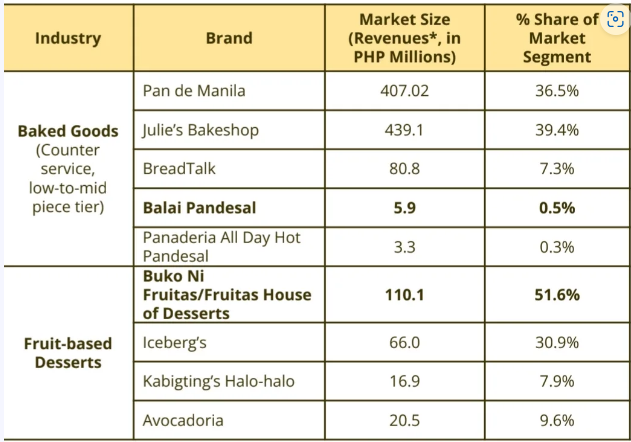

Who says the Philippines' national bread - pan de sal (bread of salt) - can't carry a food and beverage company to greater heights? Although the average size of pan de sal has gotten smaller through the years, symbolizing its decline as a source of nutrition in the Filipino diet, emerging food and beverage firm Balai ni Fruitas is proving that it can be a source of strength for the company. Balai ni Fruitas is known for its Buko ni Fruitas, its first brand which sells fresh coconut-based drinks and coconut-based desserts. Related to this is its smaller brand Fruitas House of Desserts. In 2021, in response to the COVID-19 pandemic which badly hit the company, Yu acquired Balai Pandesal bakery and put up its first community store in Kamuning, Quezon City. It turned out to be a wise move since the company has seen its bakery business grow fast.
From only 5 outlets in June 2021, it now has 50 Balai Pandesal stores, effectively become a challenger in the "mid-price counter service retail bakery" to industry leaders 43-year-old Julie's Bakeshop, as well as 25-year-old Pan de Manila. In this segment, Julie's Bakeshop had a nearly 40% market share in 2022, while Pan Manila had a 36% share, according to an industry study in 2022 cited by Balai ni Fruitas. Other key players in this segment are BreadTalk, French Baker, and Panaderia All-Day Hot Pandesal.
"We responded to the pandemic by acquiring Balai Pandesal and rolling out community stores and we are glad that this strategy paid off. We are now growing same store sales by earning customer loyalty and constantly improving our product offerings," said Yu. "We believe we have also barely scratched the surface in terms of provincial expansion and we have already started to build capacity to serve this market," he added.
Aside from selling pan de sal, Balai Pandesal has introduced new new baked goods such as malunggay bread and wheat pan de sal. It also widened its offerings of bakery products from third-party suppliers.
BREAD. Balai ni Fruitas Inc. President and CEO Lester Yu (extreme left) shows Manila Bulletin President Dr. Emilio Yap III (center) a Balai Pandesal branch in E. Rodriguez, Quezon City, in September 2022. Balai Pandesal Facebook Balai ni Fruitas, a subsidiary of Chinese-Filipino businessman Lester Yu's Fruitas Holdings Incorporated, disclosed on Thursday, April 11, that its revenues rose 57% from P341 million in 2022 to P535 million in 2023. Its net income increased by 58% from P37 million in 2022 to P59 million in 2023. It is publicly listed on the Small, Medium and Emerging Board of the Philippine Stock Exchange (PSE). Fruitas Holdings filed for a P1.2 billion Initial Public Offering (IPO) in 2019. It is using most of the funds raised from the IPO to expand its network of stores. "2023 marked significant milestones for Balai [ni Fruitas] as we passed 100 stores and the half-billion peso revenue level," Yu said. According to Balai ni Fruitas, its revenue growth of 57% in 2023 is higher than the revenue growth of select PSE-listed food service firms.